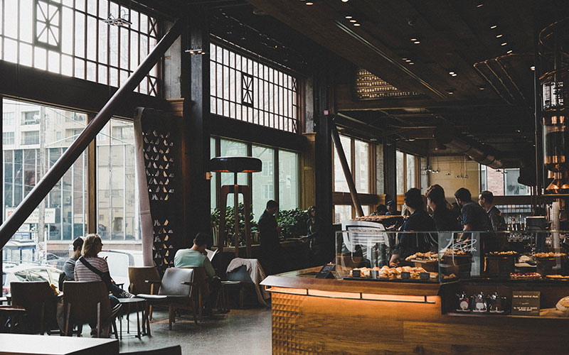

Great indoor places to see for a rainy day or night
Cafes
The Seattle area is a haven for coffee enthusiasts, boasting a vibrant cafe culture that reflects the city's deep-rooted love for the brew. From the iconic Pike Place Market to trendy neighborhoods like Capitol Hill and Ballard, cafes dot the landscape, each offering a unique ambiance and a diverse range of coffee concoctions. Renowned for its role as the birthplace of global coffee giant Starbucks, Seattle's cafe scene extends well beyond the mainstream, with independent coffee shops showcasing artisanal blends and specialty roasts. The city's commitment to quality and sustainability is evident in the locally sourced beans and cozy atmospheres that define its cafes. Whether you're sipping a meticulously crafted espresso in a sleek urban setting or enjoying a pour-over in a bohemian-chic corner, Seattle's cafes invite you to savor the perfect cup amidst the city's rich tapestry of flavors and aromas. It's a cultural experience where each cafe tells a story, contributing to the collective love affair between Seattleites and their beloved coffee
Paramount Theater
The Paramount Theatre in Seattle stands as a cultural gem, an iconic venue that exudes timeless charm and theatrical grandeur. Nestled in the heart of downtown, this historic theater has been a stage for legendary performances since its opening in 1928. Its opulent interiors, adorned with intricate detailing and a celestial ceiling, transport patrons to a bygone era of glamour. Catching a show at the Paramount is not just an entertainment experience; it's a journey into the rich tapestry of Seattle's artistic soul. From Broadway spectacles to concerts by world-renowned artists, the Paramount offers an unparalleled atmosphere that elevates any performance. Whether you're drawn to the acoustics, the history, or the sheer magic that unfolds within its walls, witnessing a show at the Paramount is a quintessential Seattle experience, an invitation to immerse yourself in the city's vibrant arts scene and create lasting memories in a venue that embodies the allure of live entertainment.
